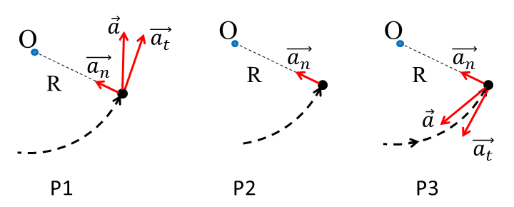
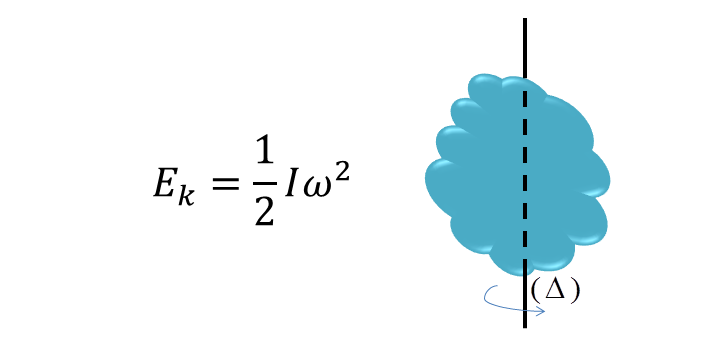

1. DYNAMICS
STRAIGHT LINE MOTION
s: distance (m), t: time (s, second), v: velocity (m/s), v_a: average velocity
CONSTANT ACCELERATION STRAIGHT LINE MOTION
a: acceleration, v_o: initial velocity, v: velocity at time t
DISTANCE FUNCTION
x_o: initial distance from origin, x: distance at time t
UNIFORM CIRCULAR MOTION
φ: angle (rad), l: length of arc, R: radius of circle, ω: angular velocity (rad/s), t: time the object moves a length of l
CENTRIPETAL FORCE
f: frequency (Hz), T: the period for one rotation (s), a: centripetal acceleration, F: centripetal force (N, Newton)
CONSTANT ACCELERATION CIRCULAR MOTION
γ: angular acceleration
ACCELERATION
a_t: tangential acceleration, a_n: normal acceleration
P1: speeding up, P2: uniform circular motion, P3: slowing down

FREE FALLING FROM HEIGHT h
g: gravitational acceleration, v: velocity at t, s: distance after t, v_h: velocity when touching the ground, t_h: time to touchdown
VERTICAL PROJECTILE MOTION
h_max: maximum height, v_o: initial velocity
Motion equation and velocity equation
ANGLED PROJECTILE MOTION
v_x, v_y: velocity; x, y: motion equation by t; H: maximum height; L: maximum distance
HORIZONTAL PROJECTILE MOTION
t_h: time when touchdown, v_h: velocity when touchdown
SLIDING MOTION ON AN INCLINED PLANE
μ: coefficient of friction
Fiction coefficient of some materials

2. FORCES
ATTRACTIVE FORCE
m₁, m₂: mass of 2 objects; r: distance between 2 objects; G: gravitational constant
GRAVITATIONAL FORCE
M: Earth mass, m: mass of object, R: Earth radius, h: object's height
GRAVITATIONAL ACCELERATION
At a height h above the nominal surface of the earth
Near the sea level
FORCE OF GRAVITY
Force of gravity on earth, a special case of Gravitational force
NEWTON'S FIRST LAW
F: forces acting on the object, v: velocity of the object, a: acceleration of the object
NEWTON'S SECOND LAW
m: object's mass (kg)
NEWTON'S THIRD LAW

LINEAR ELASTICITY - HOOKE'S LAW
k: spring constant (N/m), x: displacement (m)
A mass suspended by a spring
FORCE OF FRICTION
μ: coefficient of friction, N: normal force
3. STATICS
MOMENT OF A FORCE
F: the force applied (N), d: moment arm (the perpendicular distance from the axis to the line of action of the force)
MOMENT APPLICATION

MOMENT OF INERTIA
Rod of length l
Thin circular hoop/ Thin cylindrical shell
Solid disk/ Solid cylinder
Hollow sphere
ANGULAR MOMENTUM
I: moment of inertia, ω: angular velocity
4. CONSERVATION LAWS
MOMENTUM OF FORCE
LAW OF CONSERVATION OF MOMENTUM
v₁, v₂: initial velocities of objects 1 and 2; v₁', v₂': final velocities of object 1 and 2
PLASTIC COLLISION
v': velocity of the two body system (m₁+m₂) after impact
ONE-DIMENSIONAL ELASTIC COLLISION
v₁’, v₂’: velocities of m₁ and m₂ after impact
5. WORK AND ENERGY
WORK
W: work done by a force (J), F: force move a object for a distance s, α: angle between F and movement direction
EXAMPLES
W_p: work by gravity, h: the change in height; W_ms: work of friction's force; W: work by a spring

POWER
P: power (watt, W), t: time of conducting the work W (s)
KINETIC ENERGY
KINETIC ENERGY OF A MASSIVE ROTATING BODY

WORK-ENERGY PRINCIPLE
v₁, v₂: speeds of object before and after the change
POTENTIAL ENERGY
E_p: gravitational potential energy (J), m: mass of object (kg)
CONSERVATION OF MECHANICAL ENERGY
CONSERVATION OF ENERGY
6. MECHANICS OF FLUIDS
DENSITY
m: mass of a volume V
PRESSURE
F: force applied on area of A
PRESSURE OF LIQUIDS
d: specific gravity (N/m³), p_o: air pressure at the free surface (N/m²), p: pressure created by the weight of liquid above, p_B: total pressure at the depth h

PASCAL’S PRINCIPLE
p_s: pressure on the surface
APPLICATION
A₁, A₂: area of small and large cylinders; F₁, F₂: applied and upward forces
ARCHIMEDES’ PRINCIPLE
d: specific gravity of liquid (N/m³), V: volume of object, F_b: buoyant force
FLOW RATE
A: cross-sectional area (m²), v: flow velocity (m/s), Q: flow rate (m³/s)